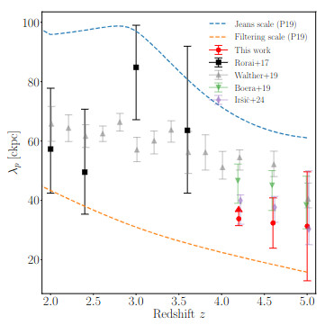
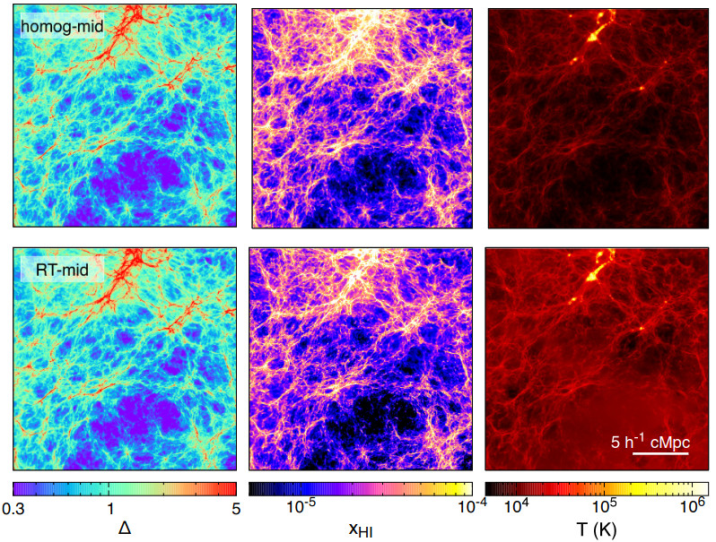

The Cosmic Dawn: Reionization & Thermal History
Pressure Smoothing & Thermal Memory
The "Ringing of the Reionization" (Iršič et al. 2026) provides the first direct measurement of the intergalactic pressure smoothing scale at $z > 4$. This scale acts as a "thermometer" for the Epoch of Reionization, allowing us to reconstruct the heat injection history and the hydrodynamic response of the IGM gas to the first ionizing sources.

Source: Iršič et al. 2026 (Fig 8)Patchy Reionization & The β-Forest
Reionization was an inhomogeneous process. By investigating the signatures of patchy reionization (Molaro et al. 2022/23) and utilizing the Lyman-β forest as a higher-redshift probe (Wilson et al. 2022), we can map the growth of ionizing bubbles. This work is essential for understanding the transition from a neutral to an ionized Universe.

Source: Molaro et al. 2022The Frontier: EQUALS & GHOSTLY
Future progress depends on high-quality, high-resolution data. Projects like EQUALS and GHOSTLY target the metal enrichment and opacity of the IGM at the very end of reionization, providing the observational ground-truth for our theoretical models.
EQUALS Project (ESO Messenger)